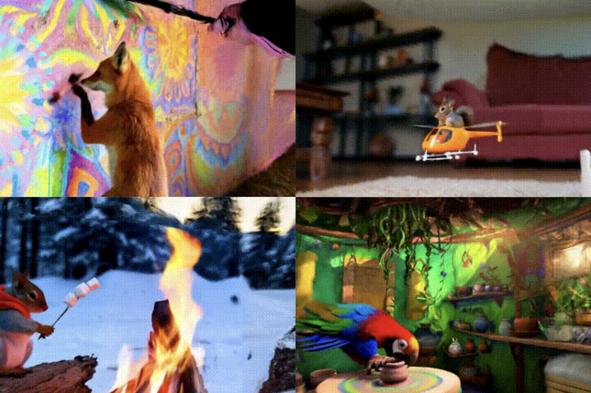

|
Vinayak Gupta
I'm a first-year Ph.D. student at the University of Maryland, College Park, advised by Prof. Jia-Bin Huang.
I've spent summers at IIIT Hyderabad and UIUC where I worked with Prof P.J. Narayanan (IIITH) in 2023, and in 2024, with Prof Yuxiong Wang (UIUC). For my Master's thesis, I collaborated with Prof Kaushik Mitra and Prof Aswin Sankaranarayanan (CMU) working on imaging and graphics. Thrilled to be trading sleep for citations — my sleep schedule has already submitted its resignation!!! |
News
- [2025/09] üéì Started Ph.D. at University of Maryland, College Park under Prof. Jia-Bin Huang.
- [2025/06] üó£Ô∏è PhotonSplat was presented at the ICCP Conference by Prof. Aswin Sankaranarayanan.
- [2025/07] üéâ PaintScene4D and FlareGS accepted at ICCV Workshop.
- [2025/06] üó£Ô∏è PaintScene4D was presented by Prof. Yuxiong Wang in his talk at the CVPR Workshop.
- [2025/05] üéâ PhotonSplat accepted at ICCP 2025.
- [2025/03] üòû PhotonSplat rejected from IJCAI 2025.
- [2025/02] üìÑ Got an offer letter from UMD!!!
Research(superscript * indicates equal contribution)My current research interests lie at the intersection of computer vision, computer graphics and computational imaging, specifically to facilitate high quality 3D reconstructions in extreme environments. To be honest, anything that involves 3D/4D interests me. |


|
PaintScene4D: Consistent 4D Scene Generation from Text Prompts
Vinayak Gupta, Yunze Man, Yuxiong Wang ICCVW 2025. project / pdf / bib 
PaintScene4D is a training-free, efficient text-to-4D scene generation framework that leverages video models for realistic, scene-level generation with controllable camera trajectories. |
|
|
FlareGS: 4D Flare Removal using Gaussian Splatting for Urban Scenes
Mayank Chandak, Sai Sri Teja Kuppa Gopi Raju Matta, Vinayak Gupta, Kaushik Mitra ICCVW 2025. project / pdf / code / bib We propose the first framework to model and remove reflective flares in driving videos using depth-guided learning and multi-view consistency. |
 |
PhotonSplat: 3D Scene Reconstruction and Colorization from SPAD Sensors
Sai Sri Teja Kuppa*, Sreevidya Chintalapati*, Vinayak Gupta*, Mukund Varma T, Haejoon Lee, Aswin Sankaranarayanan, Kaushik Mitra ICCP 2025. project / pdf / code / bib 
PhotonSplat reconstructs static and dynamic 3D scenes from noisy SPAD binary images with 3D spatial filtering, flexible colorization, and the PhotonScenes dataset. |
 |
GANESH: Generalizable NeRFs for Lensless Imaging
Rakesh Raj*, Akshat Kaimal*, Badhri Narayanan KV*, Vinayak Gupta, Rohit Chowdhary, Chandrakala S, Kaushik Mitra WACV 2025. project / pdf / code / bib GANESH enables refinement and novel view synthesis from multi-view lensless images with on-the-fly inference, scene tuning, and the we release the LenslessScenes dataset. |
 |
GAURA: Generalizable Approach for Unified Restoration and Rendering of Arbitrary Views
Vinayak Gupta*, Girish Rongali*, Mukund Varma T*, Kaushik Mitra ECCV 2024. project / pdf / code / bib 
A generalizable framework for novel view synthesis using degraded input captures containing any imperfection type. |
|
|
GSN: Generalisable Segmentation of Neural Radiance Fields
Vinayak Gupta, Rahul Goel, Dhawal Sirikonda, P J Narayanan, AAAI 2024. project / pdf / code / bib 
Transformer-based feature distillation enables generalizable Radiance Fields for 3D reconstruction and multi-view segmentation. |
|
|
U2NeRF: Unifying Unsupervised Underwater Image Restoration and Neural Radiance Fields
Vinayak Gupta*, Manoj S* Mukund Varma T* Kaushik Mitra ICLR Tiny Papers 2024. project / pdf / code / bib A unsupervised learning pipeline for generalizable novel view synthesis and restoration of underwater scenes by disentangling into individual image formation components. |
Academic Service
|
MiscWhen I'm not working, I enjoy practicing the üé∂ flute, which I'm currently learning. I've also started hitting the üí™ gym, playing üéæ racquetball, and experimenting in the kitchen by cooking Indian dishes like üçõ biryani. I have a spiritual inclination and love visiting holy places of worship, finding peace. Admittedly, I also indulge in üì∫ binge-watching YouTube, though it often comes with a tinge of regret later. I am always open to discussions or collaborations in related areas ‚Äî feel free to reach out to me via email. |
|
Template stolen from here. |